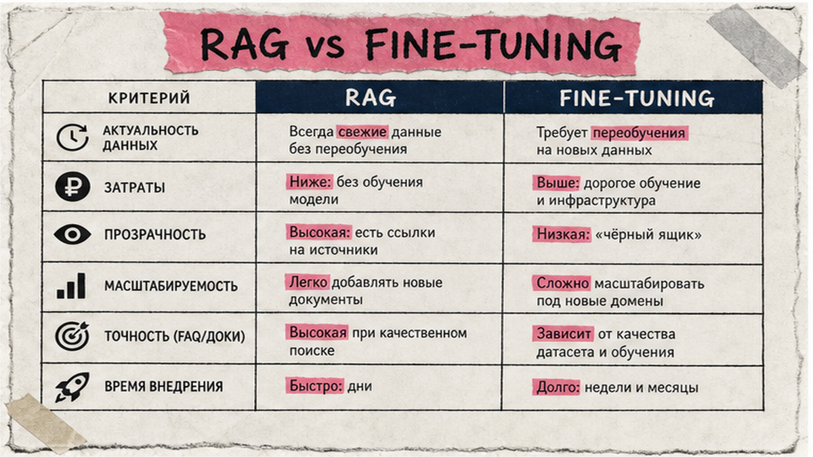
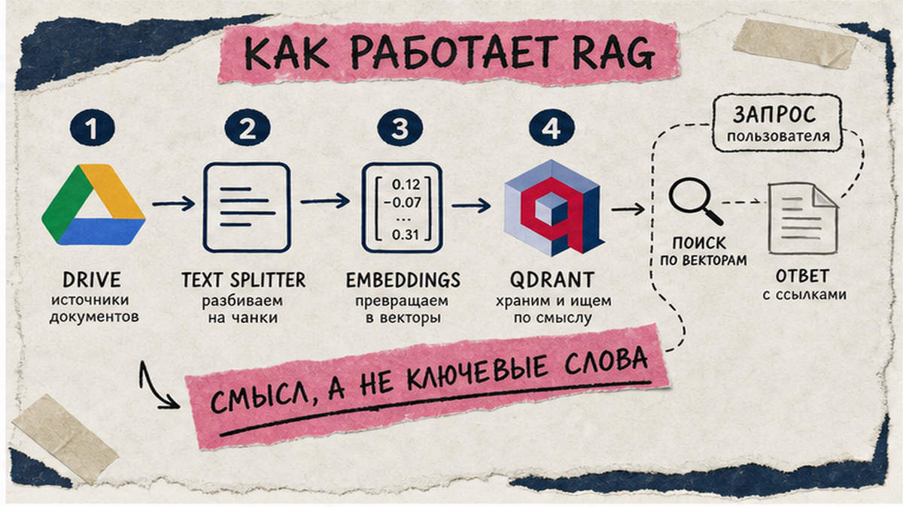
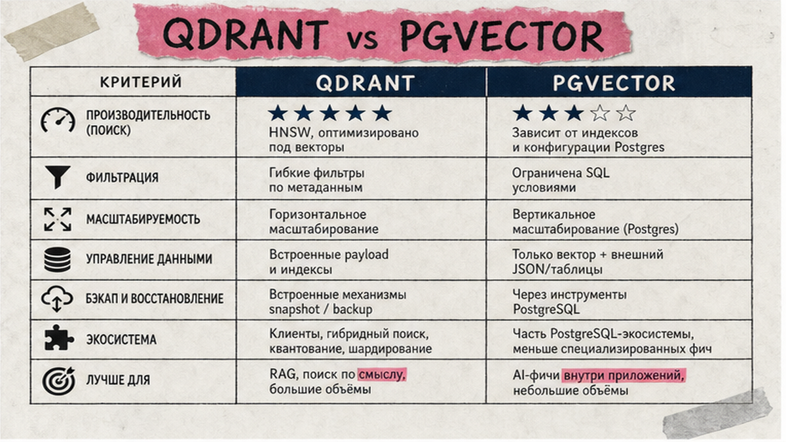

Менеджеры поддержки отвечают на одни и те же вопросы из регламентов, а обычный ChatGPT ваших PDF не видит. RAG база знаний работает иначе: перед ответом система ищет фрагменты в ваших документах, как библиотекарь по полкам, и отвечает с опорой на найденное. Ниже - пошаговый рецепт MVP на n8n с Qdrant или pgvector: ingestion, hybrid search, rerank, golden set eval и webhook-бот с эскалацией человеку. После гайда вы соберете пилот на регламентах одного отдела без ML-команды.
TL;DR / Быстрый инсайт: RAG (Retrieval-Augmented Generation) - "шпаргалка из ваших файлов": PDF режут на чанки, кладут в векторную базу, при вопросе находят top-K, сужают reranker-ом и отдают языковой модели. Цепочка: документы → n8n → Qdrant/pgvector + BM25 → rerank → LLM с цитатой → golden set 20-30 вопросов → бот с кнопкой "ошибка". Не грузите всю Wiki - узкий корпус точнее.
RAG закрывает поддержку, онбординг и внутренние регламенты: сотрудник задает вопрос, бот находит абзац из вашего документа и показывает источник. Без eval и HITL (human-in-the-loop - человек проверяет спорные ответы) около 40% AI-проектов срываются из-за скрытых затрат. Ниже workflow, а не теория "что такое RAG".
Если n8n вам пока новый, начните с автоматизация n8n: там Chat Trigger, AI Agent и tools без кода.

Fine-tuning - дообучение модели на ваших текстах: она "запоминает" стиль, но плохо обновляется при смене прайса или регламента. RAG не меняет веса модели - каждый раз подставляет свежие фрагменты из индекса, как шпаргалку перед экзаменом.
Делайте: RAG, если ответ должен ссылаться на конкретный PDF, Confluence или Google Doc. Не делайте: fine-tuning ради "знать прайс наизусть" - проще переиндексировать файл через n8n cron раз в неделю.

Кейс на Habr: загрузка всей Wiki (~3000 док.) ухудшила ответы; после фильтра "обновлялось 2 года" осталось ~400 док. - точность выросла. Начните с одного отдела или продукта, не с "всей компании".
Схема ingestion:
Drive / S3 / webhook → Text Splitter (400-512 tok, overlap 10-20%) → Embeddings → Qdrant или pgvector → индекс готов
Делайте: логируйте doc_id и chunk_id. Не делайте: один чанк на весь регламент.

Векторная база хранит embeddings - числовые "отпечатки смысла" текста. Hybrid search смешивает vector (понимает синонимы) и BM25 (ловит точные слова, артикулы, коды) через RRF - алгоритм, который объединяет два списка результатов в один рейтинг.
| Критерий | Qdrant | PostgreSQL + pgvector |
|---|---|---|
| Когда брать | Отдельный search-сервис, hybrid, фильтры metadata | Postgres уже в контуре CRM, до ~1M векторов |
| Hybrid search | Native dense+sparse, RRF в Query API | tsvector + pgvector + RRF (precision ~62% → ~84% на кейсах) |
| Self-host / 152-ФЗ | Docker/K8s, Apache 2.0 | Да, если БД on-prem |
| Интеграция с n8n | Qdrant Vector Store nodes, template 11468 | Supabase/pgvector nodes или HTTP |
| MVP time | Qdrant Cloud trial или Docker | Быстрее, если Postgres уже есть |
Итоговый вердикт: Qdrant - default для базы знаний с hybrid и rerank. pgvector - RAG "рядом с CRM". Для pgvector включите HNSW, не IVFFlat.
Делайте: retrieve top-K 15-20; RRF k=60 на большом корпусе, k=10-20 на 100-300 страницах. Не делайте: только vector, если в документах артикулы и номера договоров.
Vector search находит "похожее по смыслу", но промахивается по артикулам и SKU. Reranker - вторая модель, которая пересортировывает 20-50 кандидатов и оставляет 4-6 лучших в промпт. Без reranking качество в enterprise-гайдах проседает на 25-40%.
Пример промпта:
Отвечай только по контексту ниже. Если ответа нет - скажи "не знаю".
В конце укажи doc_id и заголовок источника. Temperature = 0.
Temperature=0 снижает "додумывание" (Wiki-RAG кейс на Habr). Делайте: bge-reranker-v2-m3 или hosted rerank API. Не делайте: класть 20 чанков в промпт - после rerank хватит 5-6.
Golden set - экзамен из 20-30 пар "вопрос - эталонный ответ". Прогоните через весь pipeline и замерьте RAGAS: faithfulness (ответ не противоречит контексту), answer relevance, context recall. Порог пилота: faithfulness ≥0.9, recall ≥0.85 - ориентир, не гарантия, но "можно показывать коллегам".
Делайте: eval после каждого обновления регламентов. Не делайте: prod без golden set - сложные задачи без человека решаются редко.
Финальный слой - канал для вопросов. Webhook (входящий URL, на который стучится сайт или мессенджер) или Telegram Trigger → AI Agent с tool "search_knowledge_base" → ответ с цитатой → кнопка "сообщить об ошибке" → задача менеджеру. Кейс Flowwow: >10 000 док., локальный RAG на n8n в 5,5× дешевле коробочного LLM и сборка за 2,5 мес. вместо 6-9 мес. кастома.
Схема бота:
Вопрос → hybrid retrieve (k=20) → rerank (top-5) → LLM + цитата → [кнопка "ошибка"] → webhook → менеджер / re-index
Для tools через MCP (протокол «розеток» для ИИ) используйте тот же принцип, что в пошаговом гайде «подключение MCP в Cursor» — он работает и в n8n AI nodes. Делайте: эскалация при низкой уверенности rerank. Не делайте: отправлять клиенту ответ без источника.
MVP на ~1000 документов по отраслевым оценкам занимает 6-8 недель. Не обещайте руководству "за выходные на всю компанию".
После пилота расширяйте корпус по одному разделу, каждый раз прогоняя golden set. Считайте метрики: доля вопросов, закрытых ботом, и доля эскалаций. Если нужен второй канал (Make вместо n8n) или связка с CRM — те же принципы tools и webhooks разбираются в гайде по n8n и подключении MCP в Cursor.
Материал проверен: эксперт Артур Хорошев (CEO Maya AI, эксперт по автоматизации на n8n, Cursor и ИИ-агентам).
Достоверность данных: параметры chunk size, hybrid, RRF, RAGAS сверены с открытыми источниками на июнь 2026 года; показы Wordstat - после обновления MCP-токена.
Соберите 20-30 эталонных вопросов, очистите узкий корпус, настройте ingestion в n8n (splitter → embeddings → Qdrant или pgvector), подключите AI Agent с tool retrieval, прогоните golden set и только потом открывайте бот.
Старт: 400-512 токенов, overlap 10-20%. Для длинных регламентов - 500-1000 tok. Режьте по заголовкам секций, не только по длине - так точнее попадание в нужный пункт.
ChatGPT не видит ваши PDF и Confluence. RAG перед ответом ищет фрагменты в индексе и показывает цитату - меньше выдумок про ваши цены и правила.
Qdrant, если нужен отдельный search-сервис с native hybrid и фильтрами по metadata. pgvector, если PostgreSQL уже хранит CRM-данные и вы не хотите новый сервер.
Vector ловит смысл, но промахивается по артикулам и кодам. Reranker пересортировывает 20-50 кандидатов и оставляет 4-6 лучших - без него precision заметно падает.
Golden set 20-30 Q&A, прогон через pipeline, метрики faithfulness и context recall (RAGAS или вручную). Порог ~0.9; при провале меняйте chunk size и overlap, не модель.
Кнопка "сообщить об ошибке", сохраните chunk IDs из лога, переиндексируйте документ, передайте диалог менеджеру - не закрывайте тикет автоматически.